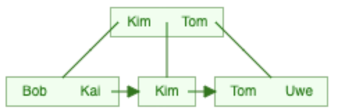

Datenbanken - SS 2022
Prof. Dr.-Ing. Johannes Schildgen
johannes.schildgen@oth-regensburg.de
Übungsblatt 12 vom 19./20.01.2023
Prof. Dr.-Ing. Johannes Schildgen
johannes.schildgen@oth-regensburg.de
Übungsblatt 12 vom 19./20.01.2023

Abgabe-Deadline: 19.01.2023 9:00 im Moodle
Betrachten Sie folgenden B+-Baum der Klasse (k=1, k*=1):
fakultaet(INT), die eine Integer-Zahl entgegennimmt und einen Integer ausgibt: die Fakultät der übergebenen Zahl.freundschaften mit den Spalten person1 und person2.